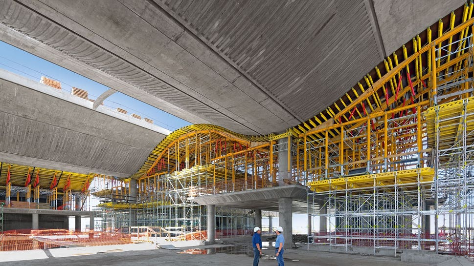

Stillas, forskaling & tilkomst · Sande
Om PERI Norge AS
Nedenfor kan du utforske hele vårt utvalg av produkter og tjenester for å finne den beste løsningen for ditt prosjekt.
PERI Norge AS bistår kunder i Sande med fagmessige leveranser innen fasadestillas og rullestillas, industristillas og spesialkonstruksjoner, takoverbygg og værbeskyttelse og forskaling og sikringsutstyr.
Alle konstruksjoner bygges og kontrolleres i strengt samsvar med Arbeidstilsynets forskrifter. Vi leverer, bygger om og demonterer til avtalt tid slik at de andre fagene på byggeplassen aldri blir stående og vente.
Krevende fasader og konstruksjoner beregnes nøye for optimal arbeidshøyde og bæreevne. Ryddige betingelser for rigging, leieperiode og nedrigging gir full kostnadskontroll i prosjektet.
«Trygg arbeidshøyde og pålitelig logistikk for små og store prosjekter.»

Vil du vite mer om hvordan vi kan hjelpe deg?
Ta kontakt for en uforpliktende samtale med våre fagfolk.
Ta kontakt